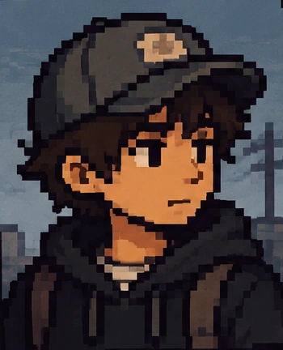
Pepe
Protagonista
Estudiante de Ingeniería en Tecnología de Software que llega de Seybaplaya a Campeche.

Lejos de casa, cerca de tu historia. Un videojuego narrativo 2D de simulación de vida, en pixel art, sobre la experiencia de los estudiantes foráneos.
Jugar el demo en itch.io ▾ DeslizaAquí va el juego incrustado.
Pepe es un estudiante de Ingeniería en Tecnología de Software que llega de Seybaplaya a Campeche para continuar sus estudios. El juego está pensado como un semestre de 90 días, dividido en diez actos, y cada decisión afecta su energía, estrés, felicidad, dinero y relaciones. El demo actual cubre las primeras escenas.
Fora de Lugar quiere hacer visible lo que viven los jóvenes que dejan su lugar de origen para estudiar: administrar el dinero, pagar la renta, comer, moverse por la ciudad, trabajar y estudiar al mismo tiempo, y adaptarse a un lugar nuevo.
La idea surgió en el tercer semestre de la carrera, en la materia de Programación Orientada a Objetos, cuando el equipo trabajaba con Greenfoot. Nació de conversaciones con compañeros foráneos que contaban lo difícil que era vivir lejos de casa. Con el tiempo, el proyecto pasó a ser un videojuego en Godot.

Protagonista
Estudiante de Ingeniería en Tecnología de Software que llega de Seybaplaya a Campeche.

Apoyo a distancia
Llama a Pepe por teléfono y le pide que no gaste mucho.
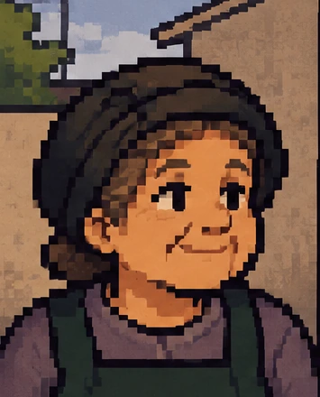
Dueña del puesto de panuchos
Pepe va a su puesto a buscar empleo y ella le dice que sí.
El demo recorre estas escenas, en orden:
Pepe llega.
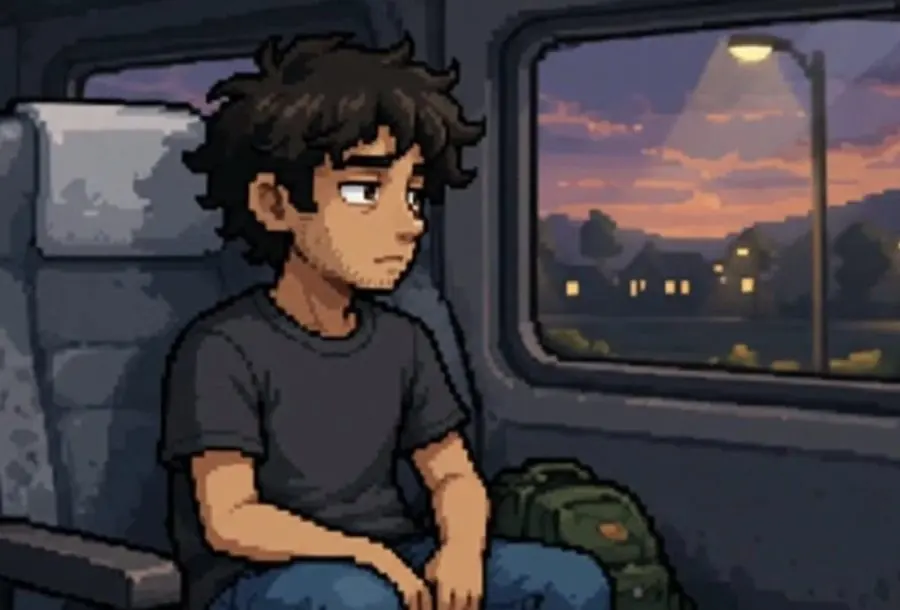

Pepe se queda en su cuarto y lo limpia, en un minijuego de limpiar.

Pepe camina al súper y recibe una llamada de su mamá.
«Está bien, hijo. Compra solo lo necesario y no gastes de más. Cuídate mucho.»

Pepe hace la compra, en otro minijuego.
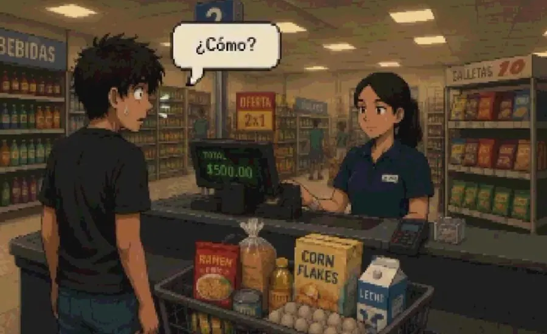
Pepe se queda sin dinero y necesita buscar empleo. Va al puesto de panuchos de Doña Mary y ella le dice que sí.
«Creo que me emocioné con la despensa, ahora necesito conseguir un trabajo…»

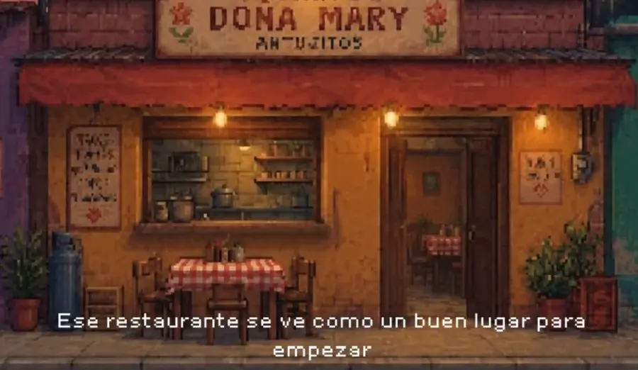

Pepe empieza a trabajar y entrega platillos a las mesas.
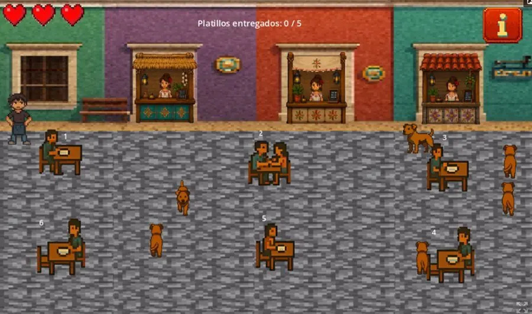
En una cinemática, Pepe va a la escuela y ve a sus compañeros felices. Se pone triste y nostálgico por su pueblo.

Pepe va pensativo en el camión.
«Ver a todos felices en la escuela… me hizo sentir que no encajo aquí».
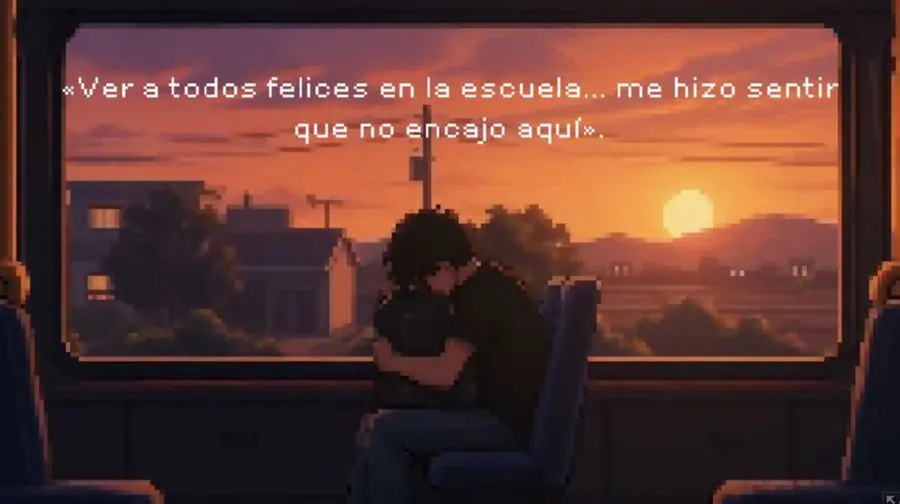
Pepe llega a su cuarto y se queda pensando.
«¿Cómo voy a equilibrar la escuela y el trabajo…? Apenas puedo con todo. Extraño mi casa…»
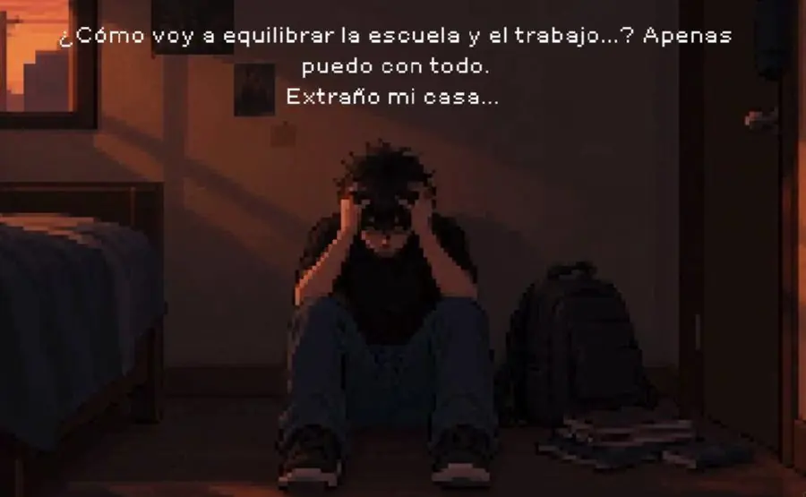
Pepe se pone el mandil y dice que todavía sigue llorando, pero con menos frecuencia.
«La misma rutina de siempre: escuela, trabajo y llorar… aunque últimamente ya lo hago menos».
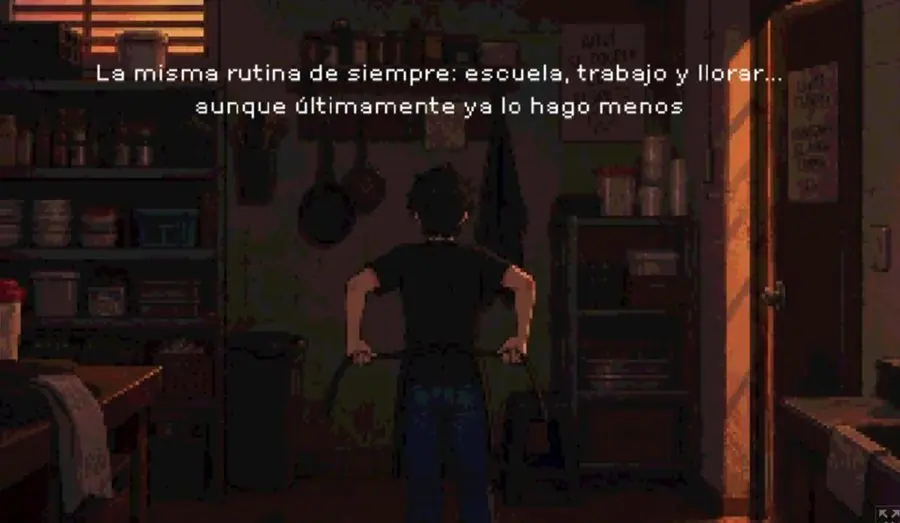
El juego está hecho en Godot 4 con GDScript, y el equipo trabaja el código en GitHub. También se usaron ChatGPT y Gemini, y Pixilart para los minijuegos.
Limpiar el cuarto. Pepe barre el cuarto, saca la basura y acomoda los muebles.

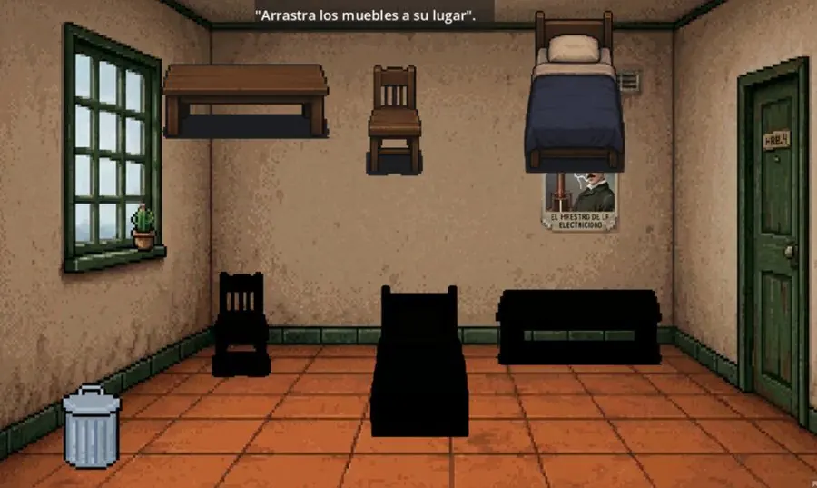
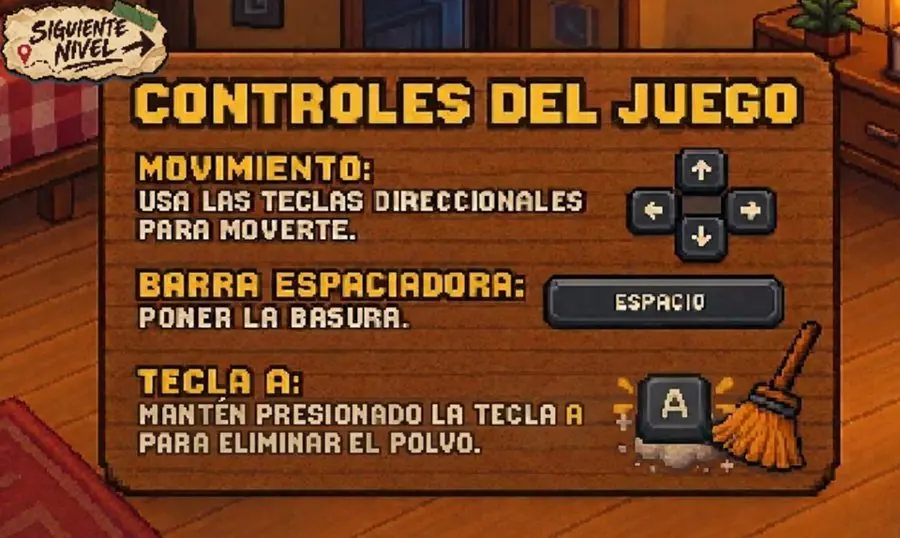
El súper. Pepe va de compras con un presupuesto de $600 y una lista de productos.


Servir platillos. Pepe entrega los platillos a las mesas del restaurante.
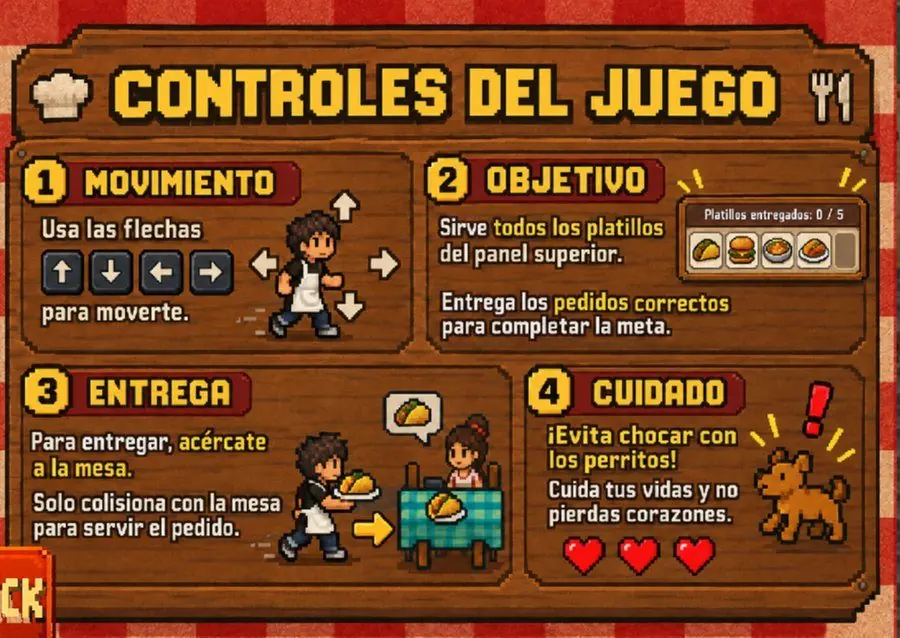

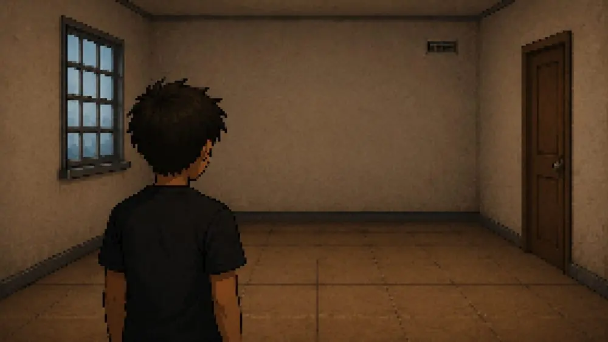


El equipo aplicó la encuesta «Viviendo Lejos: Encuesta de Experiencias de Estudiantes Foráneos».
Para medir el efecto del juego se aplicarán cuestionarios antes y después de jugar, con escala del 1 al 5. Esa evaluación todavía no se ha realizado, así que por ahora no hay resultados.
Fora de Lugar ya tiene una propuesta narrativa definida sobre las experiencias de los estudiantes foráneos. Se desarrollaron los conceptos principales de la historia, los personajes, los escenarios y las mecánicas.
También se trabajó el estilo visual en pixel art y los prototipos que representan situaciones cotidianas de adaptación, independencia y vida lejos del hogar. El demo jugable ya incluye las escenas descritas arriba.
Se planea ampliar la experiencia con nuevas rutas narrativas, personajes y eventos que muestren distintas realidades de los estudiantes foráneos. Los actos 7 a 10 están reservados para una segunda fase.
También se busca agregar más sistemas de interacción, dar más profundidad a las decisiones y crear varios finales según las acciones del jugador.
A largo plazo, el objetivo es consolidar Fora de Lugar como una experiencia educativa e interactiva que genere empatía y reflexión en un público más amplio, y seguir desarrollándola en Godot.
El reporte científico del proyecto está en elaboración. Este es el resumen de lo que plantea:
¿En qué medida una experiencia interactiva como Fora de Lugar puede contribuir a generar conciencia y empatía sobre las dificultades que enfrentan los estudiantes foráneos al vivir lejos de su lugar de origen?
Evaluar si jugar Fora de Lugar aumenta la concientización de estudiantes universitarios no foráneos sobre las dificultades que enfrentan los estudiantes foráneos.
Interactuar con Fora de Lugar aumentará el nivel de concientización de los estudiantes no foráneos sobre las dificultades económicas, emocionales, académicas y sociales de los foráneos. Se comprobará comparando sus respuestas antes y después de jugar.
Parte visual y front end
Desarrollador (back end)
Desarrollador (back end)
Asesor
Coasesor